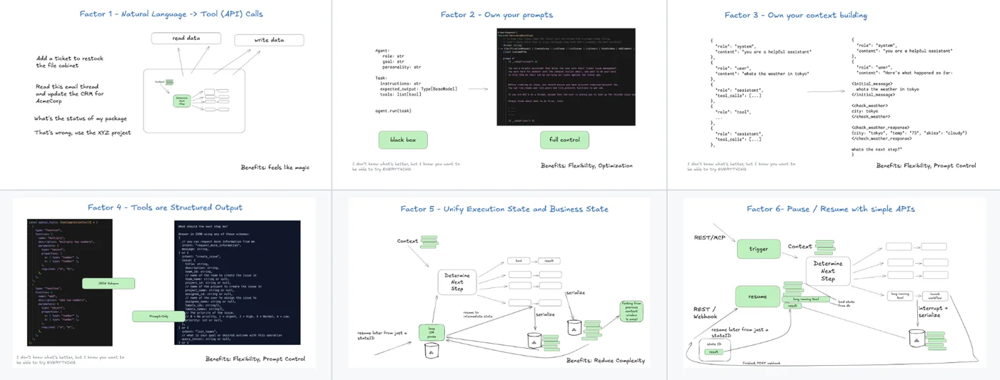

12-Factor Agents
Humanlayer 把“prompt + tools + loop”拆成一套可交付生产客户的系统原则：先收敛上下文、再结构化工具、再把控制权留在你自己手里。
Agents
Context
Control
12
Factors
23.3K
Stars
1.8K
Forks
TS
Apache / CC
先别把它当框架这仓库更像一份生产原则手册：它反对“把 LLM 包成黑盒 agent loop”，主张把 agent 还原成大部分是普通软件、少量由模型做决定的系统。
01
为什么这份手册会火：它在回答“生产级 agent 到底长什么样”
仓库开场就把观点摆得很直：真正有用的 agent 产品，往往不是“提示词 + 工具 + 循环”那么简单，而是大部分逻辑由确定性软件承担，模型只在关键节点出手。它不是在鼓吹更多 prompt，而是在重新定义什么叫“够生产”。
README 里最有力的一句判断是：很多自称 AI Agents 的产品，其实只是把 LLM 嵌进了传统软件流程里。这个 repo 的价值在于，它把这种隐性事实显性化，整理成 12 条设计约束。
production customers
context engineering
deterministic core
LLM at the edges
从“模型输出”到“可交付软件”的路径
输入
自然语言 + 任务目标
→
上下文
own your prompts / context window
→
工具
structured outputs + deterministic code
→
控制
pause / resume / humans / reducer

图 1：README 视觉截图。它强调的不是单个功能，而是“像一份工程手册一样组织 agent 实践”。
02
12 条原则：按工程层拆开，而不是按“功能清单”理解
最稳妥的读法不是死记 12 条标题，而是把它们分成四层：输入/上下文、工具/状态、控制/人类协作、收敛/扩展。这样更容易把原则变成你自己的 harness 约束。
01
Natural language → tool calls
把自然语言输入转成结构化对象，而不是把“理解”交给不可见的框架魔法。关键是：模型负责决策，代码负责执行。
02
Own your prompts
提示词不该被框架黑盒接管。你要自己拥有 prompt 工程、版本控制、评审和重写能力，才能知道每次变化到底改了什么。
03
Own your context window
context engineering 是核心工作：输入到模型的不是“现在这一轮消息”，而是发生了什么、下一步做什么。上下文怎么压缩、怎么组织，决定上限。
04
Tools are structured outputs
工具调用本质上就是模型输出 JSON / 结构化字段，再由确定性代码执行。不要把 tool system 设计成另一个黑盒 API。
05
Unify execution state
别过早把执行态和业务态拆成两套复杂系统。很多场景里，统一事件流、消息列表、工具结果，反而更清楚、更少错位。
06
Launch / pause / resume
Agent 是程序，不是“会说话的云朵”。你应该能启动、暂停、恢复、查询、终止，且这些动作有清晰 API。
07
Contact humans with tools
人类不是旁观者，而是系统的一部分。通过工具把“请审批 / 请确认 / 请补充”做成显式交互，才能支撑高风险动作。
08
Own your control flow
控制流要自己掌握：何时断开循环、何时等人、何时等待长任务、何时做总结和缓存，别把命运交给通用 agent loop。
09
Compact errors into context
把错误信息压回上下文，让模型“看见失败”。很多修复不是靠更聪明，而是靠让下一步能读取上一步的错误与堆栈。
10
Small, focused agents
别做能干一切的巨型 agent。小而专的 agent 更容易维持短上下文、稳定行为和可测试性，复杂系统靠组合而不是靠单体万能。
11
Trigger from anywhere
让 agent 能从 slack、email、短信、事件、cron 等入口被触发，也能在同样的渠道回人。真正的系统不是只能在 UI 里点按钮。
12
Stateless reducer
把 agent 视为对事件流的折叠器：状态来自输入事件，输出是下一轮事件。这个视角最接近“可重放、可审计、可恢复”的生产软件。
03
这本手册真正教你的，不是“多加几个技巧”，而是重写架构边界
适合直接借走的部分
- 把“模型负责什么、代码负责什么”拆清楚。
- 把 context engineering 当成核心工程能力，而不是附加项。
- 把 pause / resume / human gate 设计成一等公民。
- 把错误、事件、工具结果统一进可回放的状态流。
不适合直接照搬的部分
- 把 12 条当成任何产品都要全量打勾的清单。
- 把“agent”理解成统一的框架范式，而不是一组可组合原则。
- 把 demo 级概念直接上生产，不做审计、恢复、可观测性。
- 把“更多 loop”误当成“更强 agent”。
最小落地形态production skeleton
const thread = loadThread(state)
const prompt = threadToPrompt(thread) // 03: own the context window
const step = await model(prompt) // 01 / 04
if (step.intent === 'ask_human') {
return pauseAndRouteToHuman(step.question) // 06 / 07
}
if (step.intent === 'tool_call') {
return runStructuredTool(step.tool, step.args) // 04
}
return reduce(thread, step) // 1204
推荐的阅读 / 落地顺序：先收敛，再扩展
1
先读 2、3、4。 先把 prompt、context、tools 这三个基础层钉住；这三层决定你是不是在做“真正可控”的 agent。
2
再读 5、6、8、12。 这四条决定系统性：状态怎么统一、生命周期怎么管理、控制流怎么接管、数据怎么回放。
3
然后看 7、11。 如果你的 agent 会触达人类、渠道或外部世界，这两条是生产边界的关键。
4
最后补 9、10、13。 错误压缩、小而专、预取上下文，都是把系统从“能跑”推向“更稳”的补强项。
官方定位：它是“Principles for building reliable LLM applications”，不是一个纯 SDK 或框架仓库。
许可证：Code = Apache 2.0，Content = CC BY-SA 4.0；这意味着代码与内容的复用边界不同。
仓库构成：README + 12 个 factor 文档 + appendix，另外还有早期命名的重复文件（factor-1 / factor-01 等），说明项目经历过重构与整理。
05
快速使用：怎么把这套原则变成自己的系统约束
最有效的用法不是“看完收藏”，而是把 12 条转成你自己的架构审查清单：上下文是否可重建、工具是否可审计、生命周期是否可暂停恢复、错误是否能回灌上下文。
A
写一个 event → prompt → step → tool → state 的最小闭环，先不要追求“多 agent 协作”。
B
把“人类介入点”单独列出来：什么情况下必须 pause，什么情况下必须 ask，什么情况下可自动恢复。
C
把错误视作输入的一部分，记录到事件流中，避免模型只看见“失败了”，看不见“为什么失败”。
D
当 agent 开始膨胀时，先拆成小而专的子 agent，再考虑 orchestration，而不是先做巨型单体。
06
来源与入口
GitHub：https://github.com/humanlayer/12-factor-agents
README 主张：把 LLM 应用组织成可交付给生产客户的可靠软件，而不是停留在“prompt + loop”的幻觉。
延伸阅读：factor 3（context window）、factor 6（pause/resume）、factor 11（trigger from anywhere）最适合优先回看。